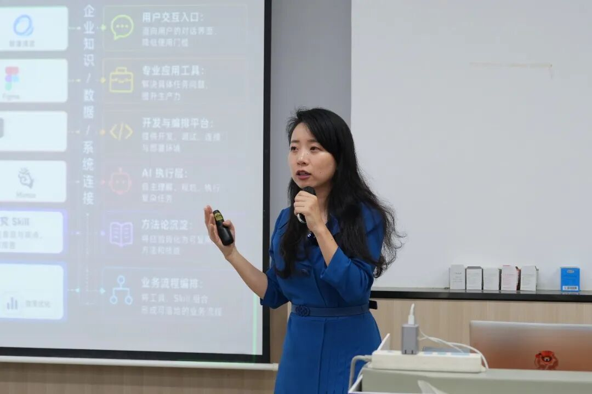
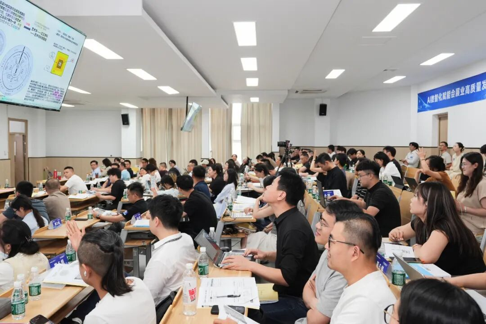
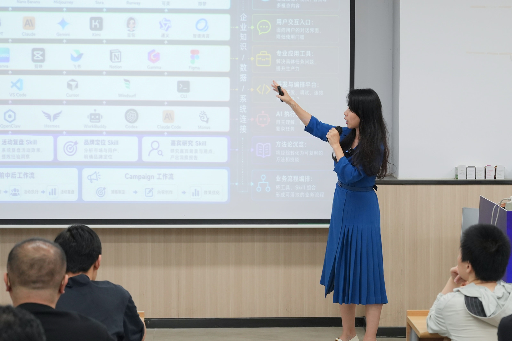

2026年8月28日至29日，“AI数智化赋能会展业高质量发展——2026江苏省会展行业培训会”在无锡科技职业学院举行。活动由江苏省会议展览业协会（简称“江苏省会展行业协会”）联合无锡、南京、常州、苏州等地会展行业协会组织，110余位行业从业者参加。SENSE AI创始人、企业AI落地顾问张佩晶受邀主讲《会展人身边的AI助手》，围绕AI如何进入会展招商、客户研究、内容营销、PPT制作、会议与知识管理等真实工作，分享从Prompt、Skill、工作流到AI Agent的落地路径。
- 活动：2026江苏省会展行业培训会
- 时间地点：8月28日至29日，无锡科技职业学院
- 参训规模：110余位会展行业从业者
- 分享主题：《会展人身边的AI助手》
- 授课方式：理论讲解、业务案例与现场问答
先找真实任务，再谈AI工具
对会展企业来说，方案撰写、供应商信息整理、客户沟通、活动报名、现场协作和展后复盘，都是AI可能介入的工作。但“可以生成”并不等于“可以交付”。课程从业务任务出发，讨论AI适合承担哪些重复、标准化、可检查的步骤，哪些实时事实、商务承诺和最终判断仍必须由人负责。

把经验沉淀为Skill、Workflow与Agent
一次有效的AI培训，不应止于提示词技巧。张佩晶在课程中把Prompt、Skill、Workflow和Agent放进同一条能力路径：Prompt解决一次表达，Skill沉淀重复做事的方法，Workflow明确步骤与协作，Agent则在边界清楚的前提下调用工具完成任务。
这也是SENSE AI设计行业培训的基本方法：根据受众岗位和企业AI起点重新选择案例，让参与者理解“下一步该从哪一段工作开始”，并为后续业务诊断和流程落地建立共同语言。

SENSE AI如何帮助企业把AI落到业务中
SENSE AI面向企业主、管理层和业务团队，从真实业务问题出发，帮助企业选择合适的AI进入路径。培训解决共同认知与基础能力，咨询陪跑推动场景诊断和试点验证，AI营销与GEO则分别服务营销流程和AI搜索可见度。
企业AI培训
围绕岗位任务、业务流程和质量标准开展认知、方法与实操训练。
企业AI落地咨询与陪跑
从业务调研、场景筛选到流程设计和试点验证，陪企业完成第一批AI应用。
AI营销与Marketing AI Agent
把AI用于市场研究、客户洞察、内容生产、活动运营和营销协作。
GEO与AI搜索优化
建设能够被AI读取、理解、引用和推荐的企业内容与证据资产。
常见问题
从企业真实任务开始
如果你的企业正在规划AI培训、寻找首批落地场景，或希望把AI用于营销、知识管理与业务流程，可以先完成一次业务调研。SENSE AI会根据企业目标、岗位任务、数据边界和现有流程，判断适合采用培训、咨询陪跑、工作流建设还是AI Agent试点。
预约企业AI落地调研公开来源
主办方报道：AI数智化赋能会展业高质量发展｜2026江苏省会展行业培训会在无锡成功举办（无锡市会议展览业协会）；中国江苏网公开报道。